Helt nye mobilscener
Leje af Mobilscener
STC har helt nye mobilscener med certifikat fra Teknologisk Institut — så kan det ikke blive bedre.
Helt nye mobilscener
STC har helt nye mobilscener med certifikat fra Teknologisk Institut — så kan det ikke blive bedre.
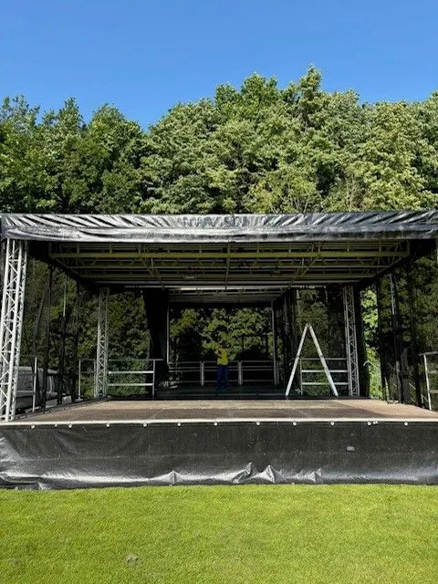
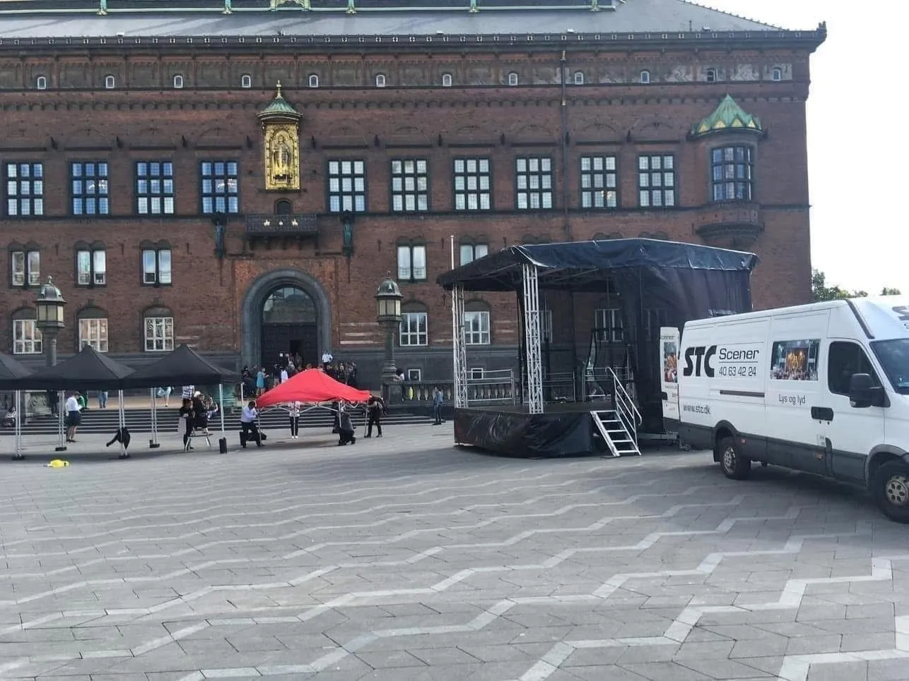
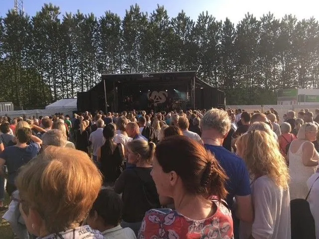
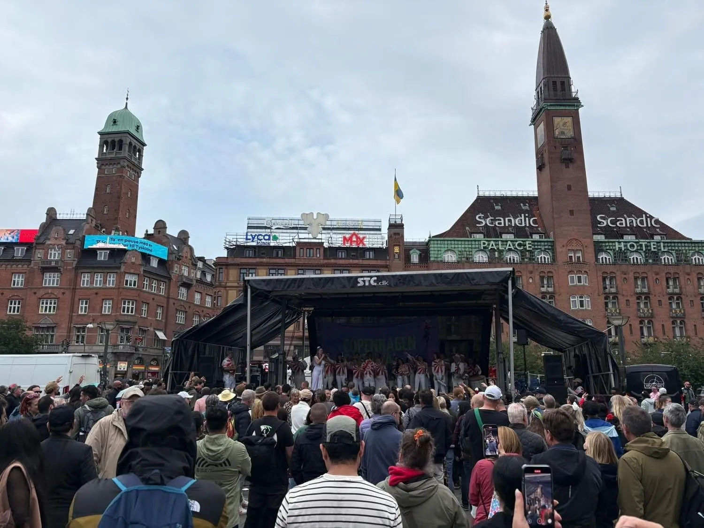
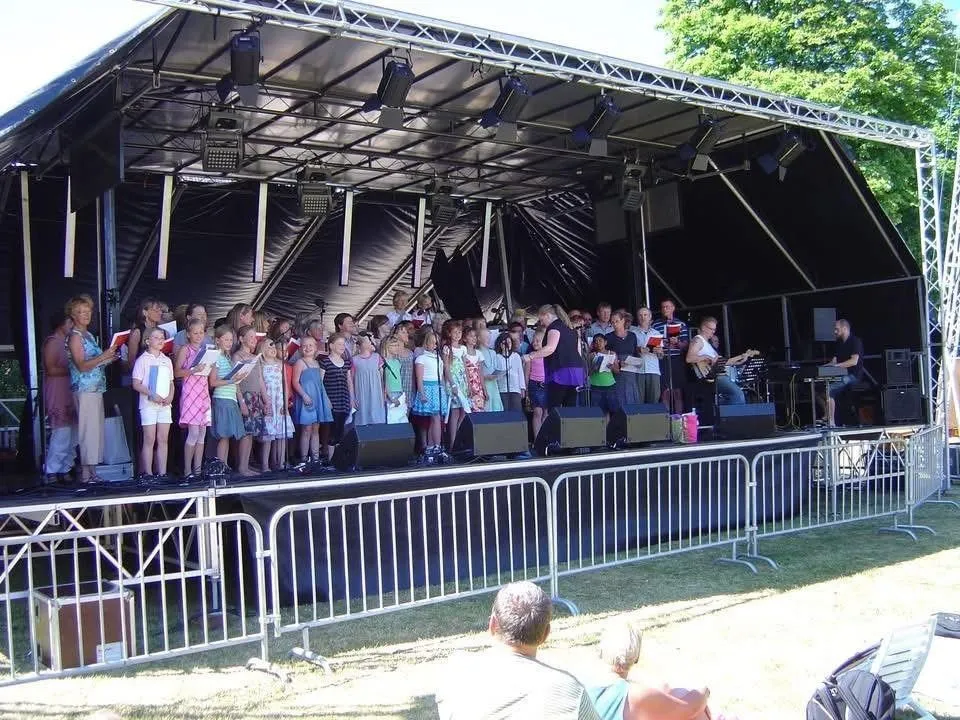
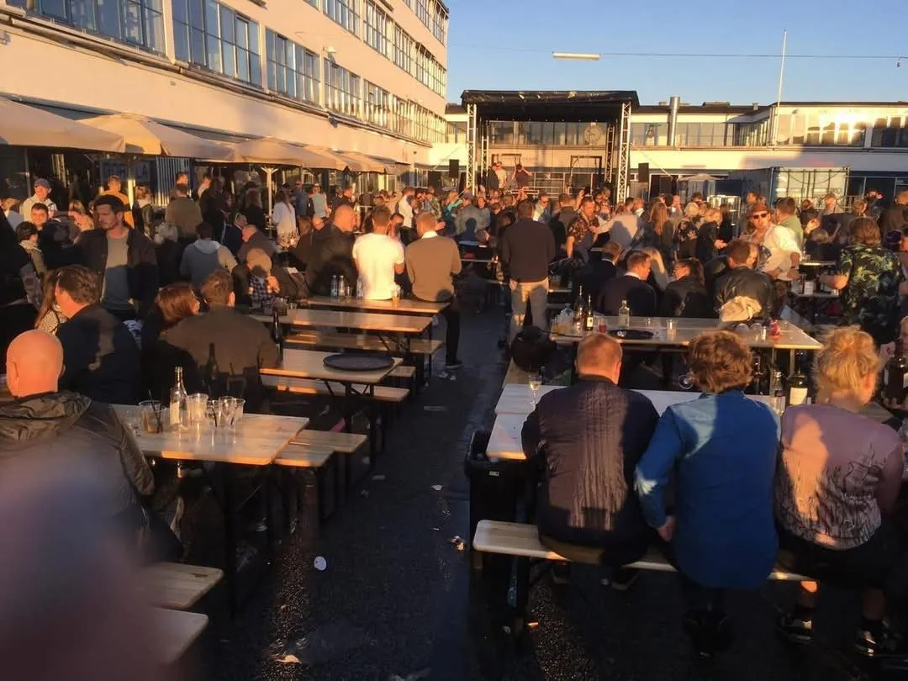
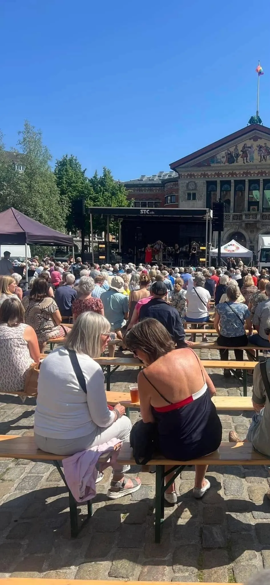
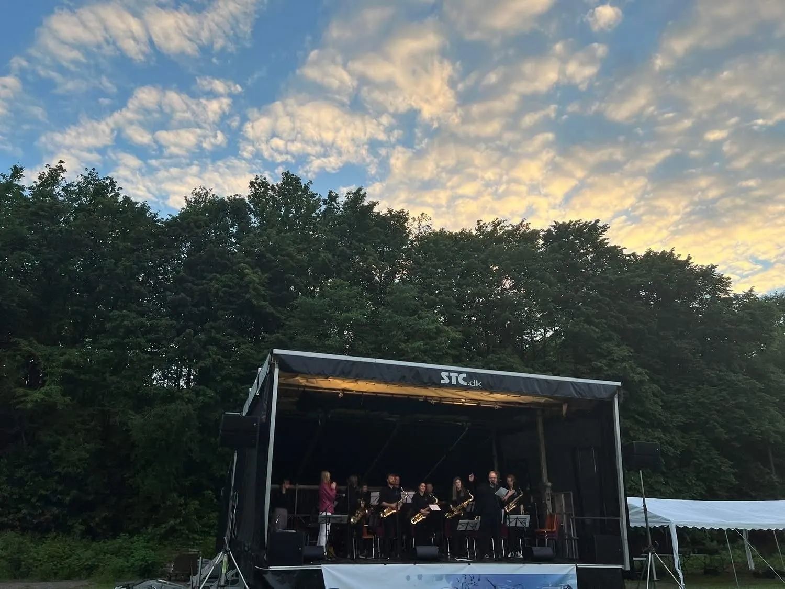
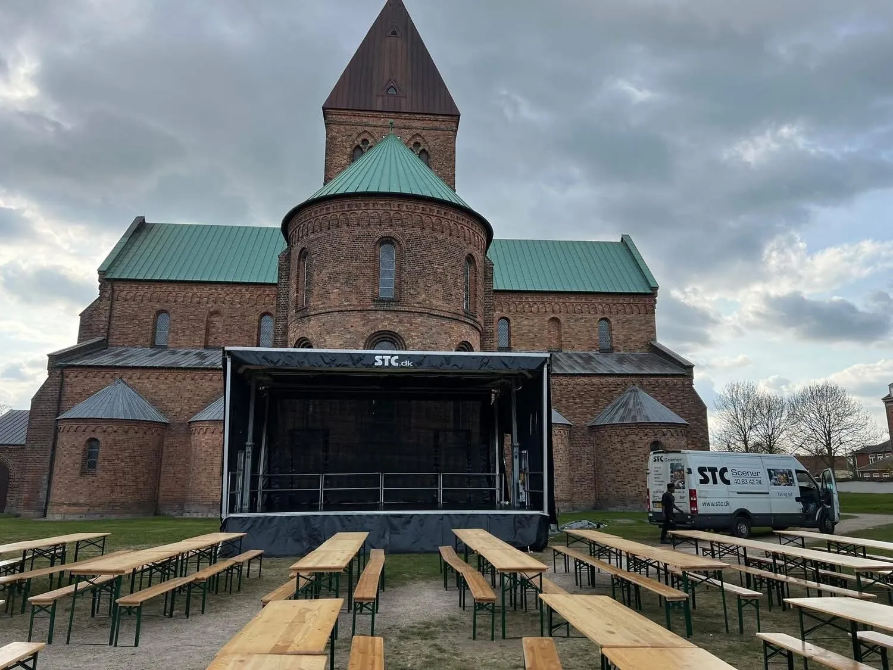
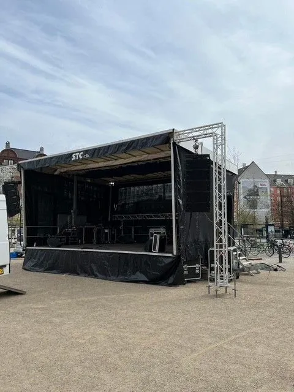
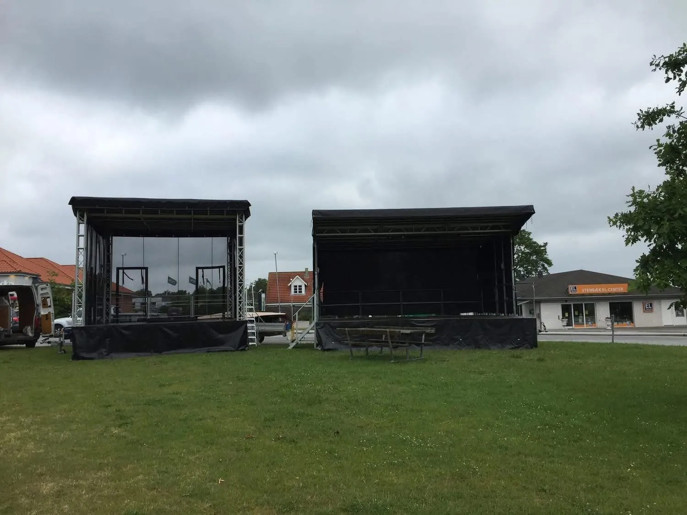
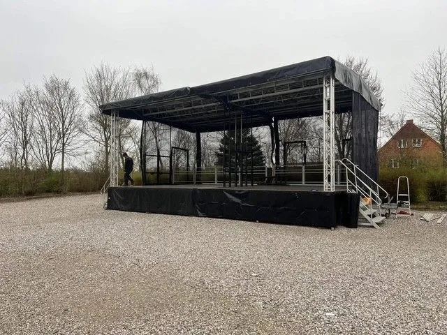
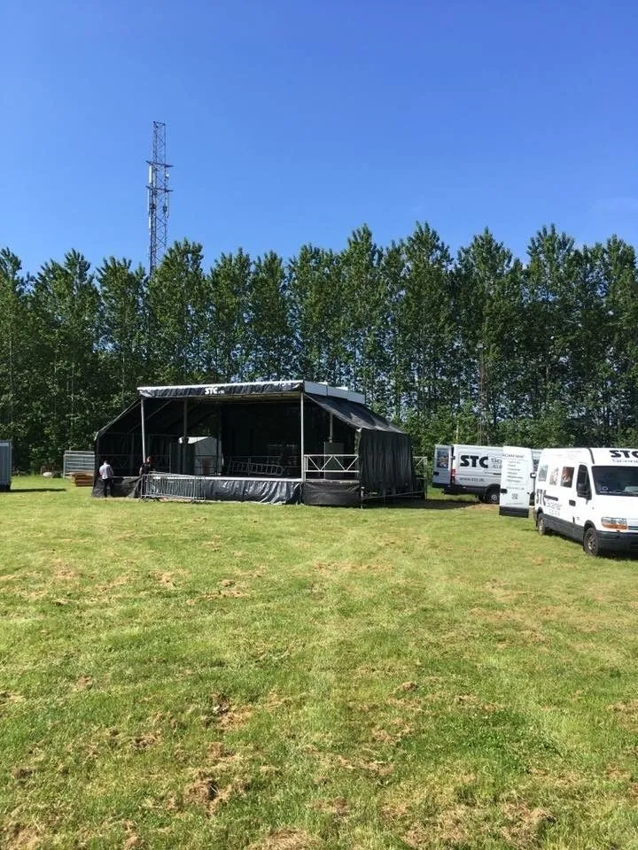
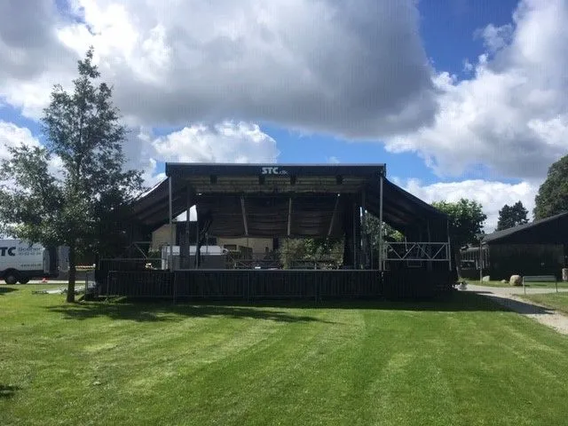
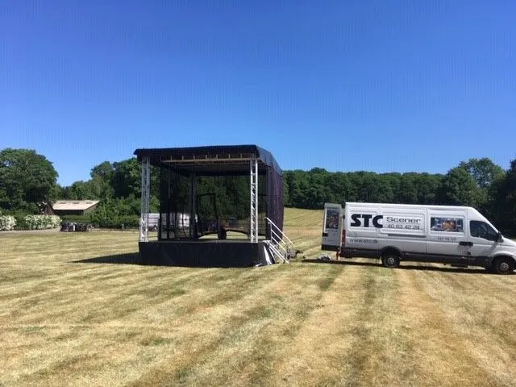
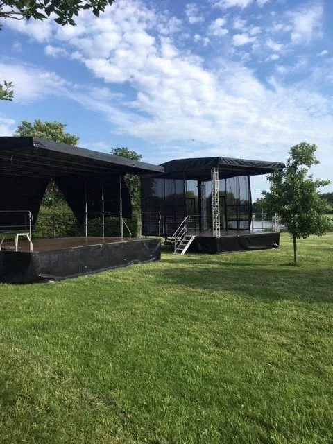
Læs om vores
Nye scener med certifikat
Tænk lidt over hvad du lejer.
STC har helt nye mobilscener — så kan det ikke blive bedre.
STC har købt nye mobilscener med certifikat fra Teknologisk Institut.
Tryghed og sikkerhed
Certifikat fra Teknologisk Institut
STC har valgt at købe helt nye mobilscener.
STC har valgt at gå ind og få Certifikat fra Teknologisk Institut. Det er din tryghed for, at alt lever op til de sidste nye standarder og har de nye Eurocodes beregninger, som alle skal have på deres scener.
Det betyder samtidigt, at du ikke skal søge byggetilladelse, når du lejer en STC mobilscene. Du sparer både tid og penge.
I mange tilfælde skal der søges byggetilladelse eller have certifikat, og hvis tingene ikke er i orden, kan der fra myndighederne gives bøde.
Lej helt nye scener fra STC, hvor tingene er i orden. Er du i tvivl om de nye regler, så ring til STC Mobilscener og få et godt råd. 40 63 42 24.
Fair og gennemsigtig
Priser & fleksibilitet
Hos STC arbejder vi ikke med faste priser — men du får altid en fair og gennemsigtig pris, der matcher opgaven. Hvert arrangement er forskelligt, og prisen afhænger af bl.a. geografi, varighed, bemanding og omfang. Derfor skræddersyr vi altid en løsning, der passer præcist til jeres behov. Ring til Morten Lind på 40 63 42 24 og få et uforpligtende tilbud.
Fleksibel højde
Hos STC kan du leje en mobilscene, hvor gulvet kan bygges højere end 1 m.
Landsdækkende
Vi kommer rundt i hele Danmark. Transport er inkluderet — du betaler ikke for kørsel frem og tilbage.
Ekstraudstyr
Alt til dit arrangement
Få evt. et tilbud på lys og lyd. Fås med stort tilbehørsprogram. I kan leje meget ekstra tilbehør, hvis I har brug for det.
Erfaring og tillid
STC har leveret scener til over 1000 koncerter over hele landet. Vores kunder vælger os igen og igen. Vi tror det er fordi, vi i STC altid er klar med gode råd og vejledning fra start til slut, og vores kunder kan trække på over 30 års erfaring ved store og små events.
Rådgivning inkluderet
Gode råd og vejledning følger med, når du lejer mobilscener hos STC — det er ikke altid den billigste pris, som er den billigste løsning. Tænk over det.
Ring direkte til Morten Lind — eller send os en besked, så vender vi hurtigt tilbage.